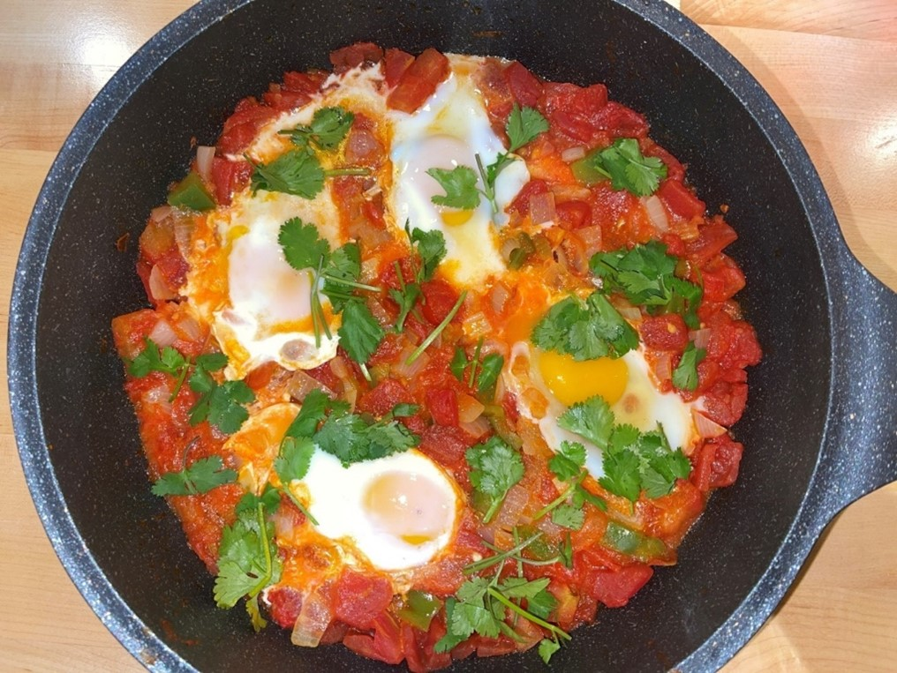

Shakshuka is a delicious and colorful dish that is quick and easy to prepare!
One of my favorite meals to prepare at home is shakshuka, a North African dish comprising poached eggs floating in
a spicy tomato sauce with garlic, onions and peppers, though this recipe lends itself well to customization with all
sorts of other ingredients.
Personally, I like to make my shakshuka pretty spicy, adding garlic chili crisp, red pepper flakes and some hot peppers
to the mix. While feta is a common addition, various cheeses can be added - goat cheese, mozzarella, etc, and most
separately-cooked proteins mix well with it too. I like to add ground pork or beef, leftover steak or chicken to mine.
Ingredients
Extra virgin olive oil
1 large yellow onion
2 red bell peppers
2 garlic cloves, chopped
1 tsp ground coriander
1 tsp sweet paprika
1/2 tsp ground cumin
Red pepper flakes
Salt and pepper
6 tomatoes, chopped
1/2 cup tomato sauce
6 large eggs
1/4 cup chopped parsley leaves
1/4 cup chopped fresh mint
Steps
Heat 3 tbsp olive oil in a skillet. add chopped onions, peppers, garlic, spices, salt and pepper. Cook, stirring occasionally until the vegetables have softened, approximately 5 minutes.
Add chopped tomatoes and tomato sauce. Cover and simmer for about 15 minutes. Uncover and cook a bit longer to allow mixture to reduce. Taste and addjust spices as needed.
Use a wooden spoon to make six indentations in the sauce, evenly spaced out. Gently crack an egg into each indentation.
Reduce heat, cover the skillet and cook on low until egg whites are set.
Uncover and add parsley, mint and red pepper flakes, along with any other spices to taste.